|
4-3-3
|
Norway | 3 | - | 2 | Senegal |
4-2-3-1
|
| HT 1-0 | ||||||
|
FIFA World CupTuesday 23 June 2026
|
||||||
- Venue
- New York New Jersey Stadium
- Attendance
- 80,663
- Referee
- Wilton Pereira Sampaio
Substitution13'
J. Ryerson
M. Pedersen
Goal43'
M. Pedersen
Substitution46'
F. Aursnes
P. Berg
Goal48'
E. Haaland
Assist: M. Ødegaard
Goal58'
E. Haaland
Assist: P. Berg
Substitution71'
A. Nusa
A. Schjelderup
- 2
Substitution84'
A. Sørloth
O. Bobb
T. Heggem
L. Østigård
Whistle45+5'
45+5'
Goal53'
I. Sarr
Assist: S. Mané
- 2
Substitution54'
E. Diouf
I. Jakobs
P. Gueye
I. Mbaye
- 2
Substitution63'
É. Mendy
M. Diaw
L. Camara
P. Ciss
Substitution72'
K. Koulibaly
P. Sarr
Goal90+3'
I. Sarr
Assist: N. Jackson
Norway | |
|---|---|
Goalkeeper | |
| 1 | Ø. Nyland |
Defender | |
| 3 | K. Ajer |
| 5 | D. Møller Wolfe |
| 17 | T. Heggem 84' |
| 26 | J. Ryerson 13' |
Midfielder | |
| 8 | S. Berge |
| 10 | M. Ødegaard |
| 14 | F. Aursnes 46' |
Forward | |
| 7 | A. Sørloth 84' |
| 9 | E. Haaland 48'58' |
| 20 | A. Nusa 71' |
Substitutes | |
| 4 | L. Østigård 84' |
| 6 | P. Berg 46' |
| 16 | M. Pedersen 13'43' |
| 21 | A. Schjelderup 71' |
| 22 | O. Bobb 84' |
Senegal | |
Goalkeeper | |
| 16 | É. Mendy 63' |
Defender | |
| 3 | K. Koulibaly 72' |
| 15 | K. Diatta |
| 19 | M. Niakhaté |
| 25 | E. Diouf 54' |
Midfielder | |
| 5 | I. Gueye |
| 8 | L. Camara 63' |
| 10 | S. Mané |
| 18 | I. Sarr 53'90+3' |
| 26 | P. Gueye 54' |
Forward | |
| 11 | N. Jackson |
Substitutes | |
| 6 | P. Ciss 63' |
| 14 | I. Jakobs 54' |
| 17 | P. Sarr 72' |
| 20 | I. Mbaye 54' |
| 23 | M. Diaw 63' |


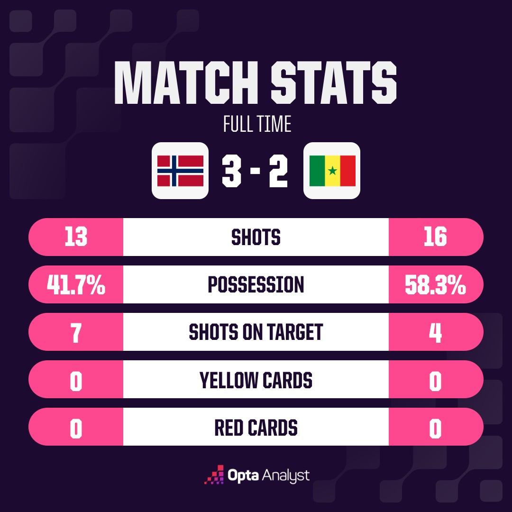
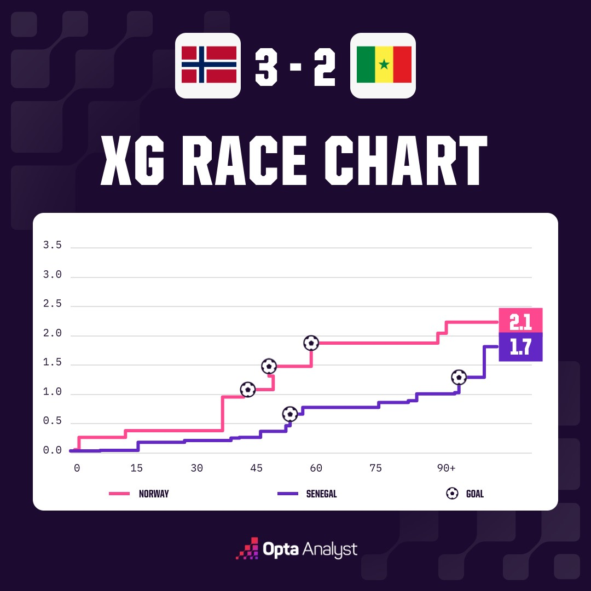
102'
Senegal have lost their last 3 games in the FIFA World Cup, their longest losing streak in the competition (since at least 1965/1966).
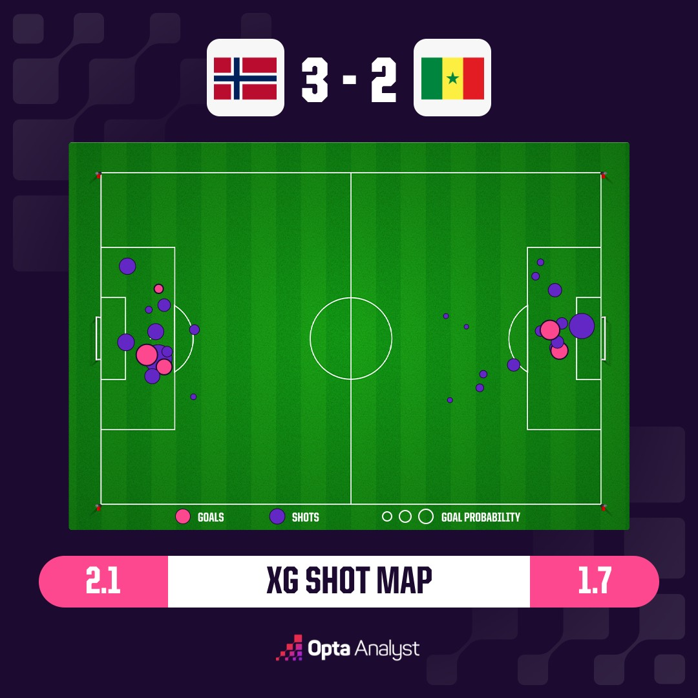
90+11'
FULL-TIME! That’s it for this game, as the referee blows the final whistle, with Norway getting the better of Senegal 3-2.
90+9'
WHAT A MISS! Oh dear, oh dear, that is an awful attempt from Ismaïla Sarr, as a huge chance for Senegal to score the goal they need goes begging. What a let off for Norway, though. They will have to defend better than that from here on out!
90+9'
A chance now for Senegal to get a good delivery into the box, after the ball is diverted behind for a corner. Senegal have been pushing for what would be a key goal, but Norway have stood firm so far.
90+9'
BLOCKED! That was close. Ibrahim Mbaye got off a shot, which was heading in, but Kristoffer Ajer was on hand to make a vital intervention. Great block!
90+8'
A free-kick to Senegal, as Patrick Berg goes in and fouls Ismaïla Sarr. However, Norway will not mind giving one away in this area too much, with plenty of distance to their goal.
90+7'
Free-kick! A foul from Pathé Ciss on Leo Østigård. It is well away from Senegal’s goal, so it is unlikely to result in a chance for Norway.
90+6'
A chance now for Senegal to get a good delivery into the box, after the ball is diverted behind for a corner. Senegal have been pushing for what would be a key goal, but Norway have stood firm so far.
90+4'
Free-kick! A foul from Erling Haaland on Moussa Niakhaté. It is well away from Norway’s goal, so it is unlikely to result in a chance for Senegal.
90+3'
Nicolas Jackson has assisted his first goal in the 2026 FIFA World Cup.
90+3'
Ismaïla Sarr has attempted 5 shots, his highest total in a single match in the FIFA World Cup.
90+3'
Ismaïla Sarr has scored his second goal of the 2025 FIFA World Cup this edition, more than any other Senegal player.
90+3'
GOAL! It is game well and truly on after Ismaïla Sarr goal cuts Norway lead down to one. That has given Senegal some hope, but will they be able to go on and level the score?
90+2'
MISS! A shot from Pape Sarr ends up being off target. They might have done a bit better with that one, but it remains Senegal 1-3 Norway.
90+1'
Still behind, but Senegal are refusing to roll over - defensive urgency rising as they fend off more pressure and push for a late turnaround.
90+1'
Sander Berge goes in on Mory Diaw and concedes a foul. The free-kick is not in a particularly dangerous area from Norway’s viewpoint, though.
90+1'
Senegal have a corner to defend now after Pathé Ciss diverts an attempt from Oscar Bobb out of play. Can Norway take this chance to get a good delivery in and really test their opponent’s defence?
88'
A rash challenge from David Møller Wolfe, who sends Idrissa Gueye tumbling, giving Senegal a free-kick. It is not in a threatening position, but it gives them a chance to get back on the ball.
88'
Erling Haaland has attempted 5 shots, the first time he has attempted at least 5 shots in a match in the FIFA World Cup since facing Iraq on 16th June 2026 (5 shots).
88'
Shot blocked! Erling Haaland unleashes an attempt at goal, but the ball does not reach its target thanks to Moussa Niakhaté, who makes a solid block to stem the danger – for now.
88'
It has been 30 minutes since Norway last attempted a shot in this game.
86'
Foul! A free-kick now in a dangerous area for Senegal, after Ibrahim Mbaye is fouled by Patrick Berg. Can Senegal make the most of this opportunity?
85'
Sadio Mané goes in on Marcus Pedersen and concedes a foul. The free-kick is not in a particularly dangerous area from Senegal’s viewpoint, though.
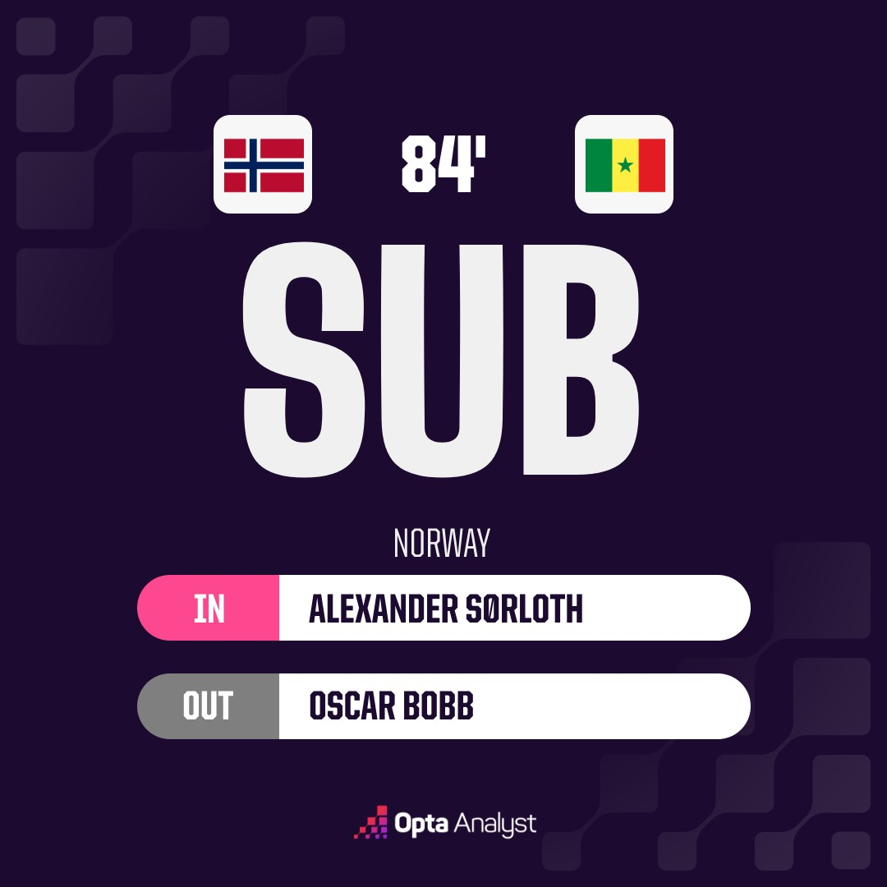
84'
A change for Norway, as they are forced into a substitution with Torbjørn Heggem having sustained an injury. Leo Østigård is coming on for Norway now.
84'
Norway are making a tactical change. Alexander Sørloth is leaving the field and in their place comes Oscar Bobb – we will soon see if this switch has the desired impact.
83'
The Norway defence steps up in time and there is a frustration for Nicolas Jackson, who thought they were through until the flag goes up to signal offside.
83'
BLOCK! An intervention from David Møller Wolfe might have just prevented a goal, with the defending player getting in the way of an attempt from Ismaïla Sarr. Solid defending there!
81'
MISS! The score remains 1-3, with Norway relieved after Senegal’s Pape Sarr goes for goal but sends their attempt off target. Not one to write home about, that one.
81'
It’s backs to the wall now — Norway throwing everything into defending their advantage, with a flurry of crucial interventions.
79'
Good play from Martin Ødegaard, who draws a foul from Pape Sarr to hand Norway a free-kick in a dangerous position. Will they create something from this set-piece?
76'
Free-kick! A foul from Erling Haaland on Moussa Niakhaté. It is well away from Norway’s goal, so it is unlikely to result in a chance for Senegal.
76'
With 15 minutes left to play, plus stoppage time, it is Senegal who have had the better of the possession, with 56.64%. Norway, on the other hand, have had 43.36% of the ball so far.
74'
That might have been going in! A fantastic block from Torbjørn Heggem, who gets in the way of a goal-bound effort from Ismaïla Sarr. Would the goalkeeper have been beaten? We will never know.
74'
Senegal have had plenty of the ball in the last 15 minutes, with 77.53% possession compared to just 22.47 % for their opponents. However, there’s not been any goal to come from that possessional dominance just yet.
73'
There is plenty of possession for Senegal, with 73.02% compared to Norway’s 26.98% in the last 15 minutes. However, Senegal have not been able to turn that dominance of the ball into a goal or even a shot during the period – which will be a huge frustration for their coach.
72'
Substitution! Pape Sarr replaces Kalidou Koulibaly for Senegal as the manager shuffles the pack. Can Pape Sarr make an impression as this match continues?
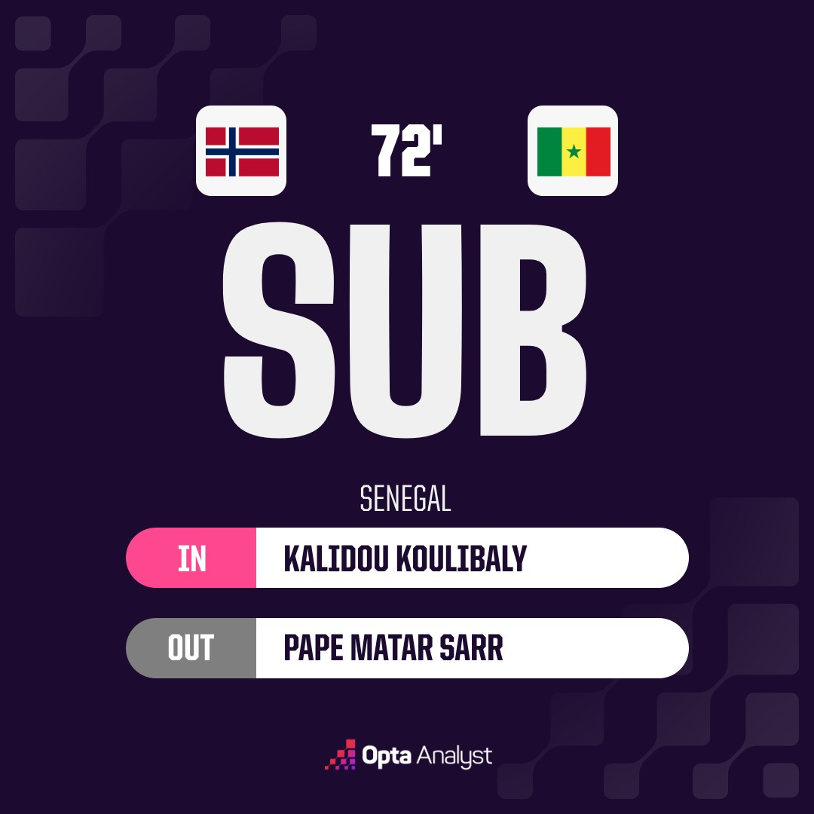
71'
Antonio Nusa’s match is over as Norway decide to make a substitution. Andreas Schjelderup enters the field in what looks like a tactical change.
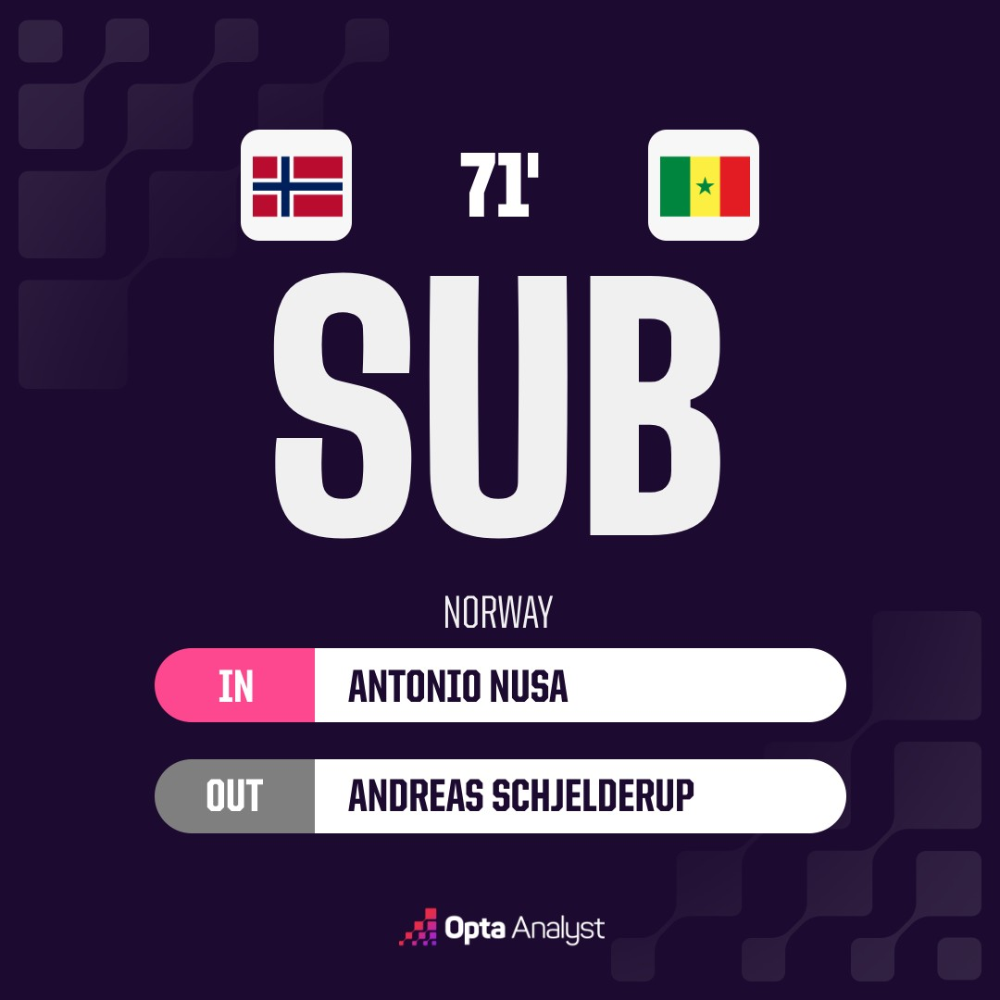
68'
A lull in this match, as the teams prob and probe, but without much success. It has been 10 minutes since there was an attempt from either side, though Senegal are seeing more of the ball, with 84 per cent possession to Norway’s 16 per cent during that time.
66'
This match is into the last 25 minutes now, and before it goes into the final stages, let’s check on the shots. There have been 20 in total – 9 from Senegal, and 11 from Norway. Of those attempts, 9 have hit the target – 3 from Senegal and 6 from Norway.
63'
The Senegal manager is looking to the substitutes’ bench, bringing on Pathé Ciss in place of Lamine Camara. Will the change make a difference? Let’s find out!
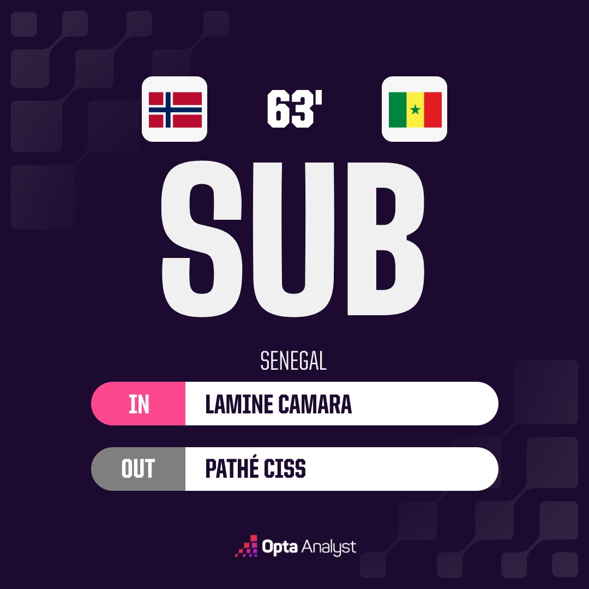
63'
Substitution. Édouard Mendy has to make way, with Mory Diaw coming on in their place following an injury. That is going to come as a blow for Senegal. Can they overcome it?
58'
Patrick Berg has assisted his first goal in the 2026 FIFA World Cup.
58'
Erling Haaland has scored his fourth goal of the 2025 FIFA World Cup this edition, more than any other Norway player.
58'
Is that game over? Norway are now well ahead, having extended their lead to 2 goals thanks to Erling Haaland’s effort. It’s now 3-1, and Senegal face an uphill battle to get back into it.
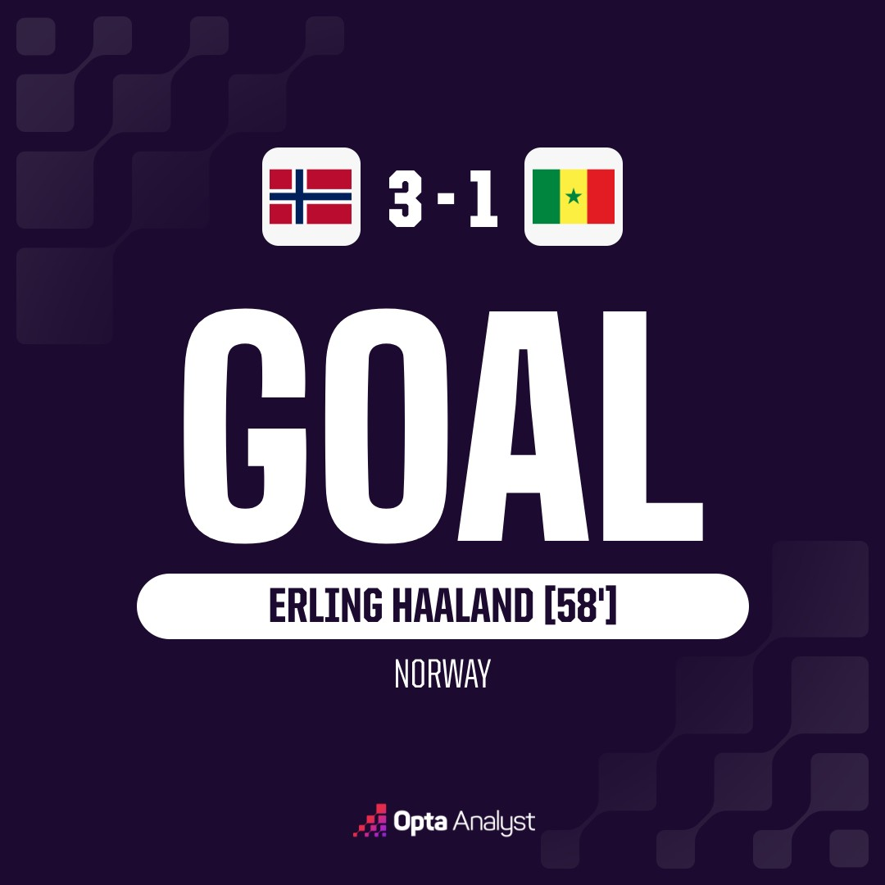
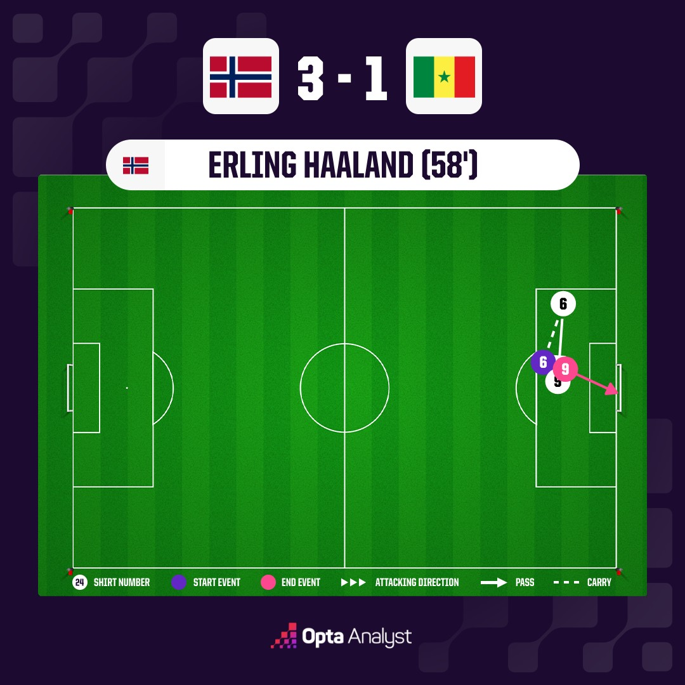
56'
That is a disappointing effort from Lamine Camara, who went for glory but got their attempt wrong, and the shot sailed off target. A frustrating moment for Senegal.
54'
Pape Gueye’s match is over as Senegal decide to make a substitution. Ibrahim Mbaye enters the field in what looks like a tactical change.
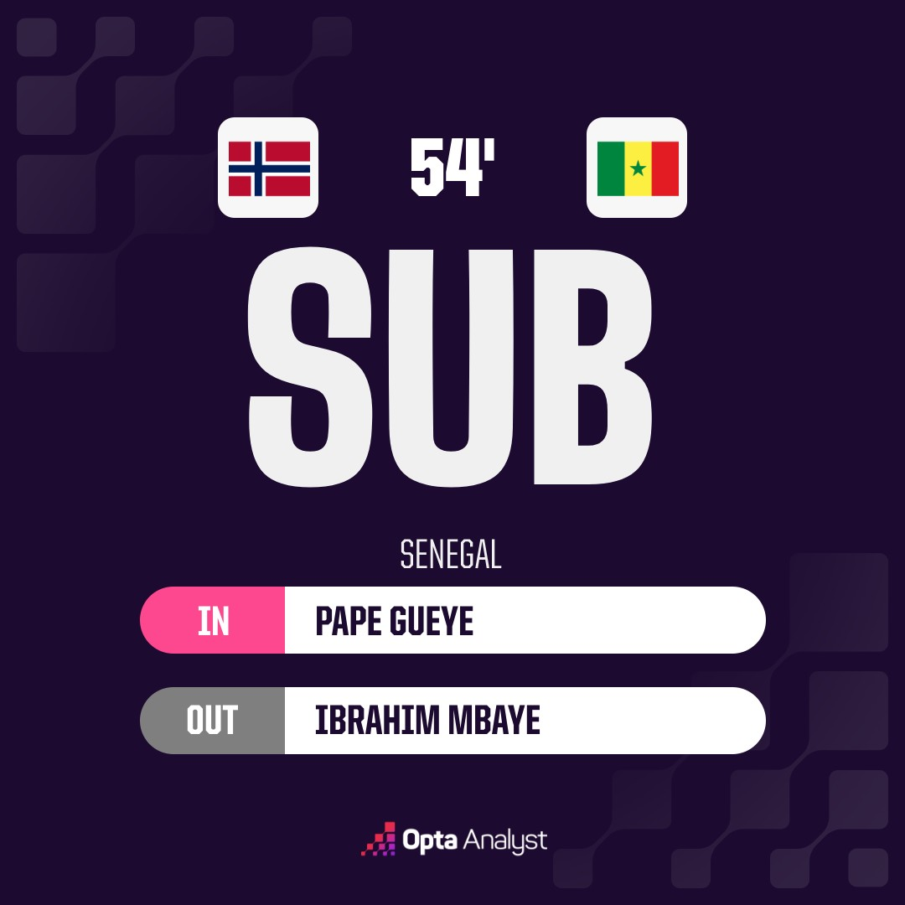
54'
A substitution for Senegal sees El Diouf replaced by Ismail Jakobs. There does not appear to be any obvious sign of an injury, so that is a tactical switch.
53'
Sadio Mané has assisted his first goal in the 2026 FIFA World Cup.
53'
GOAL! Game on! Ismaïla Sarr has scored for Senegal and suddenly, after being well behind, they are right back in this contest. Could they go on to find an equaliser now?
53'
Ismaïla Sarr has scored his first goal in the 2026 FIFA World Cup, netting for the first time since 29th November 2022 against Ecuador.
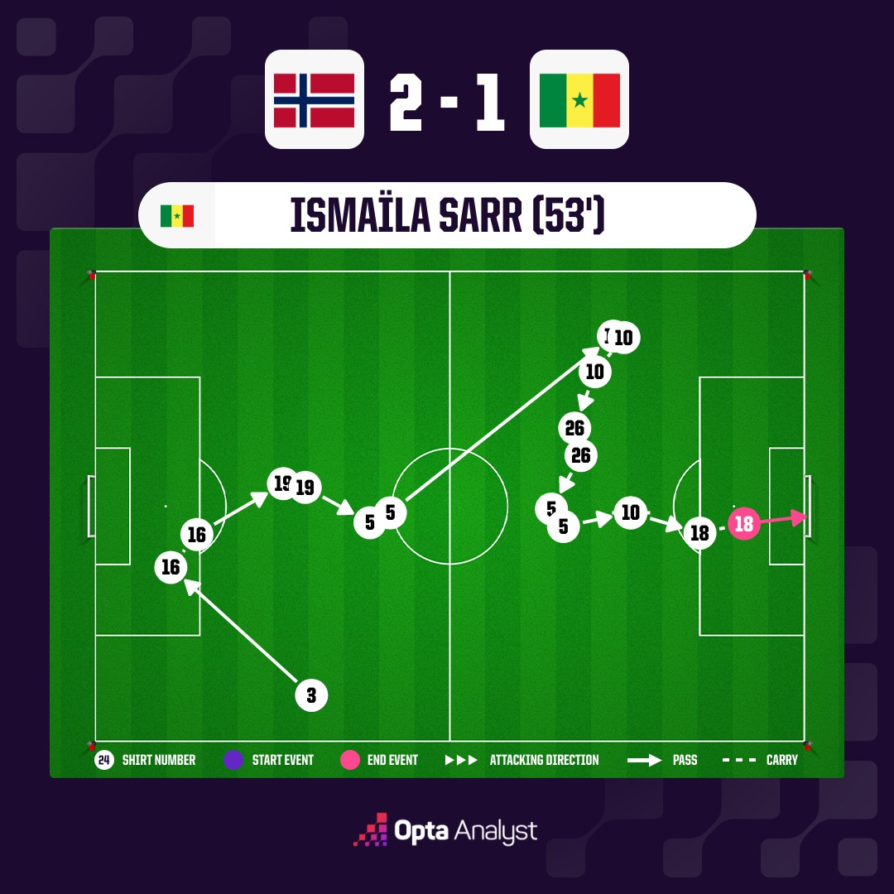
52'
Save! A big stop from Ørjan Nyland, who reacts to keep out Nicolas Jackson's attempt from inside the area.
50'
Offside! Sadio Mané thought they were through on goal, but the Norway defence stepped up in time to catch them offside, and the assistant referee puts their flag up.
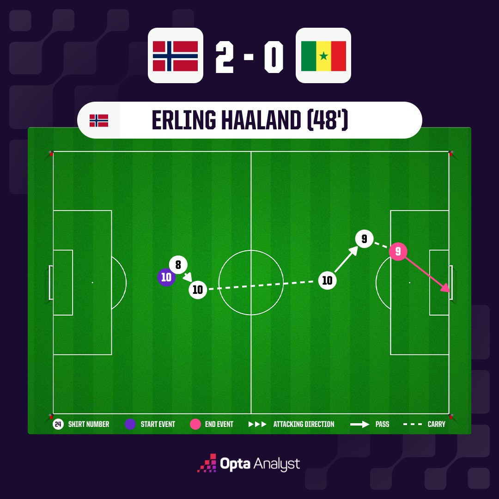
48'
Martin Ødegaard has assisted his second goal in the 2026 FIFA World Cup.
48'
Erling Haaland has scored his third goal of the 2025 FIFA World Cup this edition, more than any other Norway player.
48'
GOAL! It is 2-0 to Norway now, with Erling Haaland having put them will in control. Is there any way back for Senegal, or will Norway see this one out with ease?
46'
A foul from David Møller Wolfe on Ismaïla Sarr sees Senegal win a free-kick, but it is not in a dangerous position, so Norway should be confident they can defend it easily enough.
46'
Norway are making a tactical change. Fredrik Aursnes is leaving the field and in their place comes Patrick Berg – we will soon see if this switch has the desired impact.
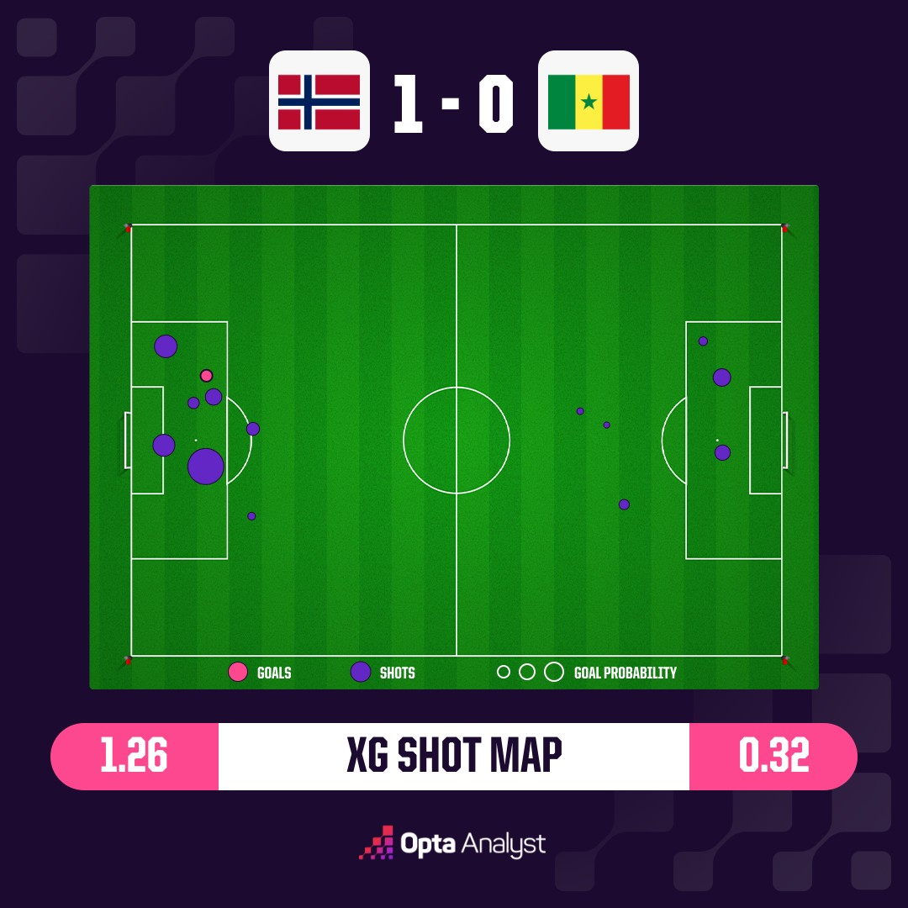
45+5'
Half-time! We reach the interval at New York New Jersey Stadium and it is Norway who have a 1-0 lead over Senegal. Can they hold on and see this out in the second half?
45+4'
SHOT! Erling Haaland manages to get a shot off from inside the area, but although it was heading in, they cannot get enough on it to beat Édouard Mendy, who makes the save.
45+4'
Oh no! That should have been in! Erling Haaland was through but could not keep their composure when it mattered most. Norway still lead, but they have not been able to extend it. Will that be the good fortune Senegal need?
45+1'
Chance! A shot from inside the area from Ismaïla Sarr was heading in, but Ørjan Nyland makes a fine stop to keep it out. A big save from the Norway shot-stopper!
43'
GOAL! The drama continues as Norway take the lead, courtesy of a goal from Marcus Pedersen. There is still plenty of time remaining for more potential twists and turns, but as things stand Norway are on track for victory.
43'
Marcus Pedersen has scored his first goal in the 2026 FIFA World Cup.
42'
Great block from Moussa Niakhaté, as they get in the way of an attempt from Martin Ødegaard that might have been set to cause the goalkeeper some problems. Solid defending from the Senegal player.
41'
A chance goes begging as Lamine Camara gets off a shot that does not hit the target. They might have done better with that one, but instead it is a goal-kick to Norway.
41'
Senegal have not had a shot on target so far in this game.
40'
A free-kick to Senegal, as Alexander Sørloth goes in and fouls Moussa Niakhaté. However, Norway will not mind giving one away in this area too much, with plenty of distance to their goal.
39'
No luck! Idrissa Gueye takes on a shot that, had they got it right, might have been set to test the goalkeeper, but instead it is sent off target and Norway come away unscathed.
37'
Free-kick! A foul from Fredrik Aursnes on Lamine Camara. It is well away from Norway’s goal, so it is unlikely to result in a chance for Senegal.
37'
WHAT A MISS! Oh dear, oh dear, that is an awful attempt from Martin Ødegaard, as a huge chance for Norway to score the goal they need goes begging. What a let off for Senegal, though. They will have to defend better than that from here on out!
37'
Plenty of the ball in the last quarter-of-an-hour of this match for Norway, but still Senegal stand firm, despite having had only 34.36% of the ball in that period. Can Norway make their possessional dominance count?
37'
In the last 15 minutes, it is Norway who have dominated the ball, having seen 65.00% of the possession, yet they have not been able to go and turn that into a single shot, so there is no imminent sign of a goal.
28'
MISS! The score remains 0-0, with Norway relieved after Senegal’s Nicolas Jackson goes for goal but sends their attempt off target. Not one to write home about, that one.
27'
No goalmouth action for some time now, with neither team having had a shot in the past 10 minutes. Will there be a moment that changes things soon? Senegal have seen plenty of the ball, however, with 71 per cent of the possession in their favour during that period.
27'
A rash challenge from Marcus Pedersen, who sends Sadio Mané tumbling, giving Senegal a free-kick. It is not in a threatening position, but it gives them a chance to get back on the ball.
20'
A free-kick to Senegal, as Fredrik Aursnes goes in and fouls Moussa Niakhaté. However, Norway will not mind giving one away in this area too much, with plenty of distance to their goal.
20'
Senegal have had plenty of the ball in the last 15 minutes, with 65.19% possession compared to just 34.81 % for their opponents. However, there’s not been any goal to come from that possessional dominance just yet.
20'
Free-kick! A foul from Fredrik Aursnes on Lamine Camara. It is well away from Norway’s goal, so it is unlikely to result in a chance for Senegal.
17'
Great block from David Møller Wolfe, as they get in the way of an attempt from Nicolas Jackson that might have been set to cause the goalkeeper some problems. Solid defending from the Norway player.
14'
No luck! Martin Ødegaard takes on a shot that, had they got it right, might have been set to test the goalkeeper, but instead it is sent off target and Senegal come away unscathed.
13'
That is bad news for Norway, as they suffer an injury blow, with Julian Ryerson having had to receive treatment before then making their way off the pitch. Marcus Pedersen is coming on.
11'
Offside! Ismaïla Sarr thought they were through on goal, but the Norway defence stepped up in time to catch them offside, and the assistant referee puts their flag up.
9'
Fredrik Aursnes goes in on Krépin Diatta and concedes a foul. The free-kick is not in a particularly dangerous area from Norway’s viewpoint, though.
8'
Shot blocked! Idrissa Gueye unleashes an attempt at goal, but the ball does not reach its target thanks to Alexander Sørloth, who makes a solid block to stem the danger – for now.
7'
A rash challenge from El Diouf, who sends Alexander Sørloth tumbling, giving Norway a free-kick. It is not in a threatening position, but it gives them a chance to get back on the ball.
4'
The Norway defence steps up in time and there is a frustration for Nicolas Jackson, who thought they were through until the flag goes up to signal offside.
3'
A chance now for Norway to get a good delivery into the box, after the ball is diverted behind for a corner. Norway have been pushing for what would be a key goal, but Senegal have stood firm so far.
3'
What a miss! That was a huge chance for Kristoffer Ajer, but they have failed to convert. What an opportunity that was for Norway.
2'
The pressure is starting to build. Norway with a cluster of set-pieces as they look to make it count.
2'
A chance now for Norway to get a good delivery into the box, after the ball is diverted behind for a corner. Norway have been pushing for what would be a key goal, but Senegal have stood firm so far.
2'
Can Senegal survive here? They will have some defending to do after the ball is turned behind for a corner kick. Will Norway take this opportunity and grab the goal they have been pushing for?
2'
It’s been tight so far, and Senegal are making sure it stays that way with strong defensive discipline and well-timed clearances.
2'
MISS! The score remains 0-0, with Senegal relieved after Norway’s Antonio Nusa goes for goal but sends their attempt off target. Not one to write home about, that one.
1'
Can Senegal survive here? They will have some defending to do after the ball is turned behind for a corner kick. Will Norway take this opportunity and grab the goal they have been pushing for?
1'
We are under way as Norway kick off at New York New Jersey Stadium. Let's hope an entertaining contest is in store.
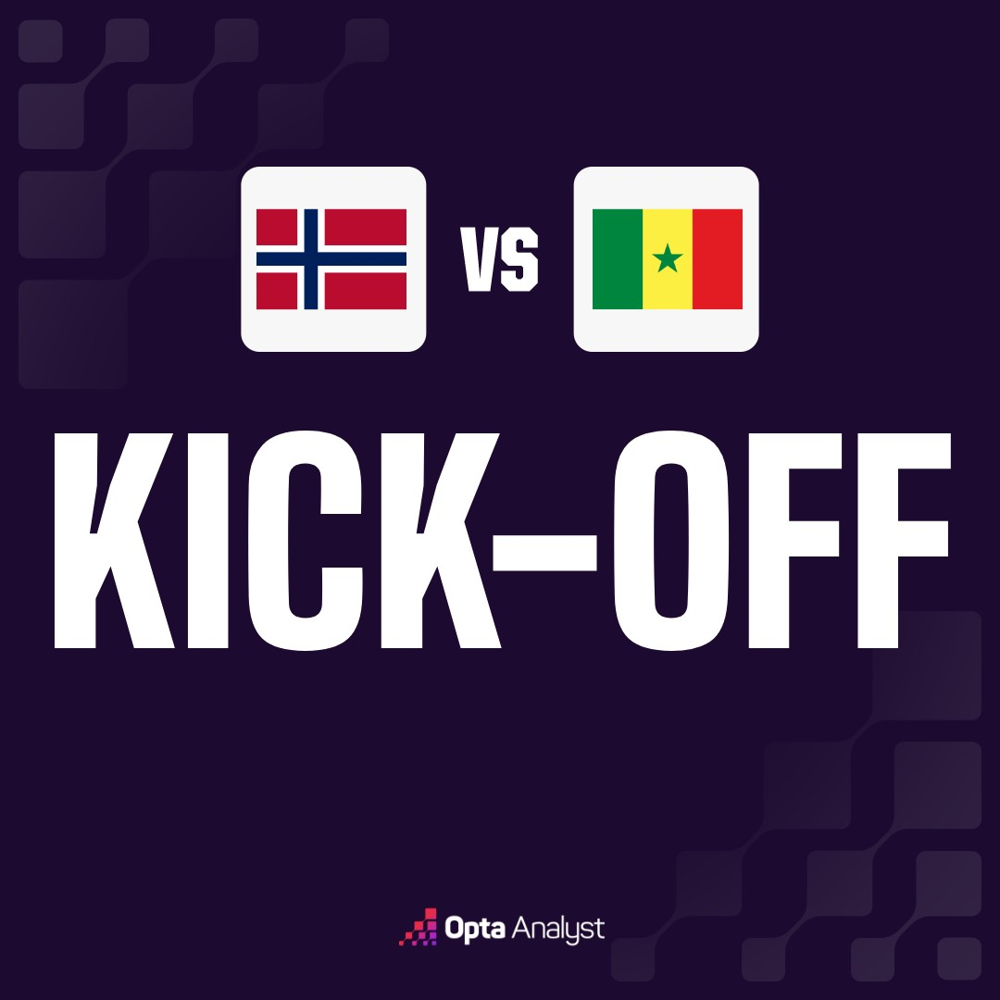
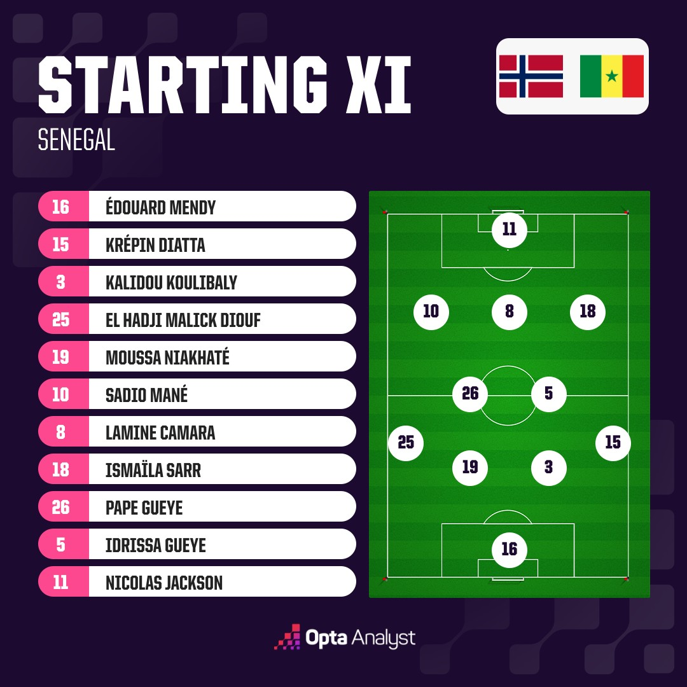
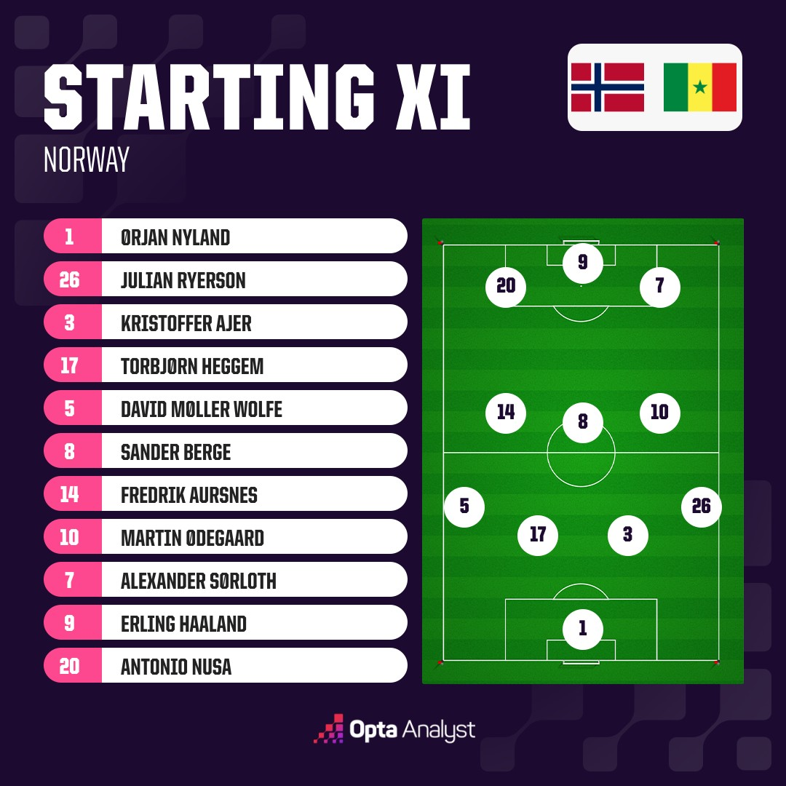
Norway have won their last 7 home matches in a row
E. Haaland has scored in the last 7 home games for Norway
There have been 3 or more goals scored in total in each of Norway's last 7 home games
Norway will look to extend their perfect start early in the FIFA World Cup group stage when they play Senegal at New York New Jersey Stadium on Monday.
Norway's opening World Cup group stage match saw them triumph 4-1 over Iraq on June 16. Erling Haaland caught the eye with two goals. They are unbeaten in their last four games in all competitions. In five games this year, they have two wins, two draws, and one loss.
Senegal suffered a 3-1 defeat against France in their opening World Cup group stage game, a June 16 clash at New York New Jersey Stadium, prolonging their winless streak to three. Ibrahim Mbaye was on the scoresheet in the loss. In 2026, they have won five, drawn one, and lost three.
Norway are atop the group on three points, while Senegal's zero points place them third. Meanwhile, France are sitting second on three points. Iraq are fourth on zero points.
Senegal won the previous encounter between the clubs, triumphing 2-1 in February 2006.
Haaland leads Norway in World Cup scoring after netting two goals against Iraq. With a goal against France, Mbaye is the early leading World Cup scorer for Senegal.
In their last six matches in all competitions, Norway have won three, drawn two and lost one. The Norwegian side scored 13 and conceded six in that period, scoring first in three of the six contests. They had six first-half goals, while their opponents netted four times in the first 45 minutes. The Senegalese side have won two, drawn one and lost three in their last six. The Senegalese side scored nine and conceded 10 over that period, netting first in three of the six. They had three goals in the first half, while their opponents netted two times before the break.
Norway have won their last 10 games at home when E. Haaland has scored
There have been 3 or more goals scored in each of Norway's last 5 games
-
General
Possession 41.7% 41.72358.27758.3% Possession lost in defensive half 33 332525 Possession lost in middle third 43 434040 Duels 96 96101101 Duels success rate 39.6% 39.58356.43656.4% Aerial duels 37 373737 Aerial duels won 54.1% 54.05445.94645.9% Successful dribbles 5 51111 Fouls won 5 51313 Offsides 0 044 Corner awarded 5 544 -
Distribution
Passes 353 353489489 Long passes 51 515858 Long passes proportion (%) 14.4% 14.44811.86111.9% Passing accuracy 79.9% 79.88787.93587.9% Passes in opponents' half 190 190293293 Passing accuracy in opponents' half (%) 68.9% 68.94784.98385.0% Total passes in the final third 99 99166166 Passing accuracy in final third (%) 60.6% 60.60680.72380.7% Forward passes 215 215290290 Forward passes (%) 60.9% 60.90759.30559.3% Through balls 3 344 Final third entries 45 456464 Penalty area entries 17 173232 Total open play crosses 5 51818 Crosses 10 102323 Crossing accuracy 30.0% 3034.78334.8% -
Attack
Goals 3 322 Shots 13 131616 Shots on target 7 744 Blocked shots 3 355 Headed shots 2 222 Shots outside the box 2 266 Shots inside the box 11 111010 Shots accuracy excluding blocked shots 70.0% 7036.36436.4% Shooting accuracy 53.8% 53.8462525.0% Key Passes 9 91313 -
Defence
Tackles 10 101616 Tackles success rate 90.0% 9043.7543.8% Clearances 26 261818 Interceptions 8 81010 Recoveries 44 444242 Attacking third recovery 3 322 Defensive third recovery 26 261919 Midfield third recovery 15 152121 Recoveries in attacking half (%) 6.8% 6.8184.7624.8% -
Discipline
Fouls conceded 13 1355 Yellow cards 0 000 Red cards 0 000